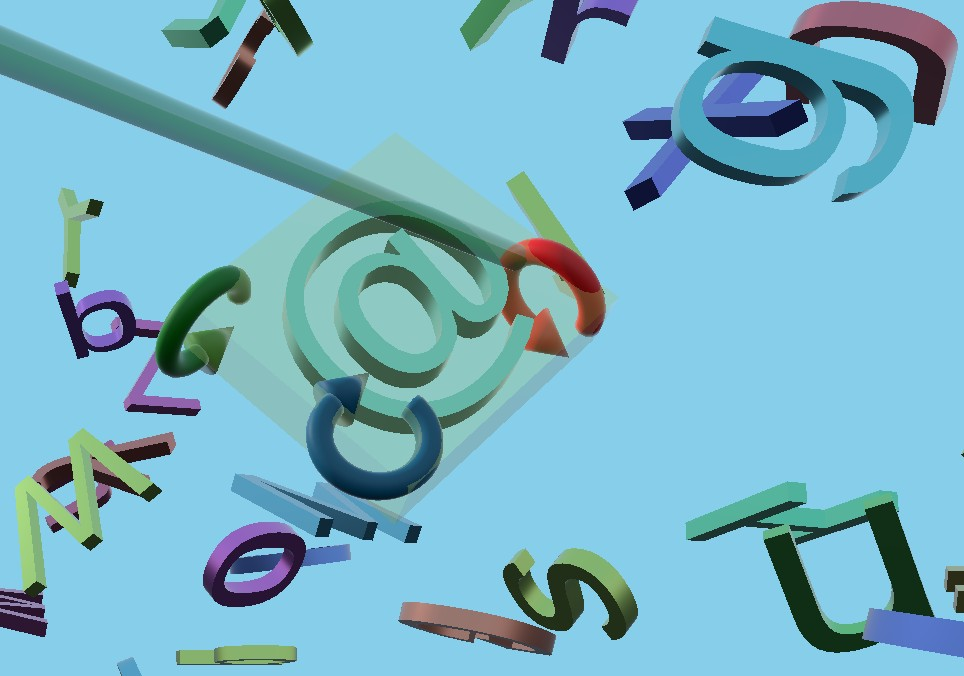

Qt Quick 3D - XR 3D Interaction example
Demonstrates how to manipulate 3D objects with Qt Quick 3D XR.

This example shows how to create components that move and resize 3D objects in a scene. It uses the same ray-picking strategy as the xr_input example.
Controller input
In this example, we create a reusable component named AimController. This performs ray picking to select a Model, and optionally allows the user to grab the selected Model and move it around.
AimController defines signals that allows us to implement custom interactions:
property Model hoveredObject: null signal objectPressed(obj: Model, pos: vector3d, direction: vector3d) signal moved(pos: vector3d, direction: vector3d) signal released() signal objectGrabbed(obj: Model)
Gadgets
We define an abstract component, XrGadget, which has two functions: handleControllerPress and handleControllerMove. In C++, these functions would have been virtual. Since this example is implemented completely in QML, we instead emit signals that can be handled in sub-components.
For example, TranslateGadget moves the controlled object along the gadget's axis based on the onMoved signal:
onMoved: (pos, dir) => { let moveDirection = delta.normalized() let mapped_axis = controlledObject.mapDirectionToScene(axisDirection).normalized() let dot = mapped_axis.dotProduct(moveDirection) let offset = mapped_axis.times(delta.length() * dot) controlledObject.position = originalPos.plus(offset) }
Reusable components
We put the AimController and the gadgets in the separate sub-project xr_shared, so we can reuse them in future examples. (xr_shared also includes the FreeformTeleporter component from the Freeform Teleportation Example.)
Tying it all together
We define a component GadgetBox that keeps track of which object is selected and shows a translucent box around the selected object, in addition to showing gadgets around the object. When a selected object is pressed, the GadgetBox will cycle between the three different types of gadgets (translate, rotate, and resize).
In main.qml we react to the signals from the AimController and call the functions in GadgetBox:
AimController { id: rightAim controller: XrController.RightController view: xrView enableVirtualMouse: true enableThumbstickMove: thumbCheckBox.checked onObjectPressed: (obj, pos, dir) => { gadgetBox.handlePress(obj, pos, dir) } onHoveredObjectChanged: { gadgetBox.handleHover(hoveredObject) hapticFeedback.handleHover(hoveredObject) } onMoved: (pos, dir) => { gadgetBox.handleMove(pos, dir) } onReleased: { gadgetBox.handleRelease() } onObjectGrabbed: (obj) => { if (!grabCheckBox.checked) return const gadget = obj as XrGadget if (!gadget) startGrab(obj) else if (gadget.grabbable) startGrab(gadget.controlledObject) } Model { source: "#Cylinder" scale: "0.05, 0.1, 0.05" z: 5 eulerRotation.x: 90 materials: PrincipledMaterial { baseColor: "black" } } xrCursor: cursor }
We also provide haptic feedback when the hovered object or gadget changes:
XrHapticFeedback { id: hapticFeedback controller: XrHapticFeedback.RightController hapticEffect: XrSimpleHapticEffect { amplitude: 0.5 duration: 30 frequency: 3000 } property Model prevObj: null function handleHover(obj: Model) { if (obj && obj !== prevObj) start() prevObj = obj } }